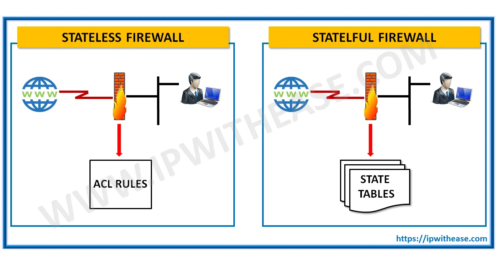
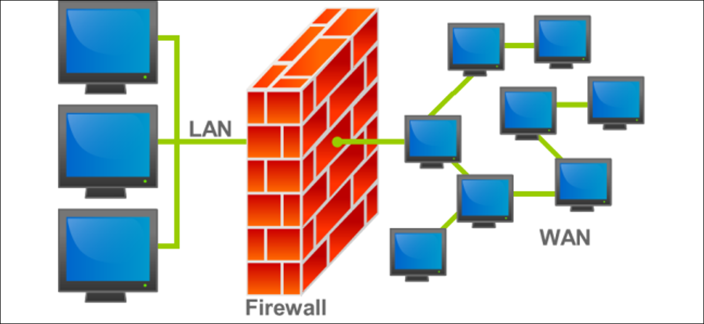
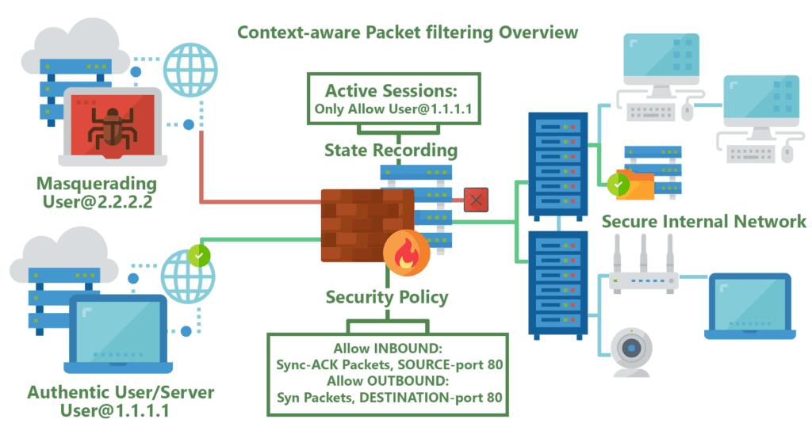
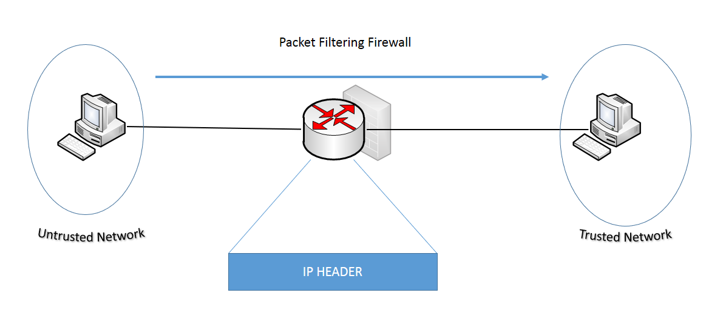

Firewalls have existed since the late 1980's and started out as packet filters, which were networks set up to examine packets, or bytes, transferred between computers. Though packet filtering firewalls are still in use today, firewalls have come a long way as technology has developed throughout the decades.
Back in 1993, Check Point CEO Gil Shwed introduced the first stateful inspection firewall, FireWall-1. Fast forward twenty-seven years, and a firewall is still an organization's first line of defense against cyber attacks. Today's firewalls, including Next Generation Firewalls and Network Firewalls support a wide variety of functions and capabilities with built-in features, including:
Network Threat Prevention
Application and Identity-Based Control
Hybrid Cloud Support
Scalable Performance
Types of Firewalls
-
Packet filtering
A small amount of data is analyzed and distributed according to the filter's standards.
-
Proxy service
Network security system that protects while filtering messages at the application layer.
-
Stateful inspection
Dynamic packet filtering that monitors active connections to determine which network packets to allow through the Firewall.
-
Next Generation Firewall (NGFW)
Deep packet inspection Firewall with application-level inspection.

What Firewalls Do?
A Firewall is a necessary part of any security architecture and takes the guesswork out of host level protections and entrusts them to your network security device. Firewalls, and especially Next Generation Firewalls, focus on blocking malware and application-layer attacks, along with an integrated intrusion prevention system (IPS), these Next Generation Firewalls can react quickly and seamlessly to detect and react to outside attacks across the whole network. They can set policies to better defend your network and carry out quick assessments to detect invasive or suspicious activity, like malware, and shut it down.

Why Do We Need Firewalls?
Firewalls, especially Next Generation Firewalls, focus on blocking malware and application-layer attacks. Along with an integrated intrusion prevention system (IPS), these Next Generation Firewalls are able to react quickly and seamlessly to detect and combat attacks across the whole network. Firewalls can act on previously set policies to better protect your network and can carry out quick assessments to detect invasive or suspicious activity, such as malware, and shut it down. By leveraging a firewall for your security infrastructure, you're setting up your network with specific policies to allow or block incoming and outgoing traffic.

Network Layer vs Application Layer Inspection
Network layer or packet filters inspect packets at a relatively low level of the TCP/IP protocol stack, not allowing packets to pass through the firewall unless they match the established rule set where the source and destination of the rule set is based upon Internet Protocol (IP) addresses and ports. Firewalls that do network layer inspection perform better than similar devices that do application layer inspection. The downside is that unwanted applications or malware can pass over allowed ports, e.g. outbound Internet traffic over web protocols HTTP and HTTPS, port 80 and 443 respectively.
